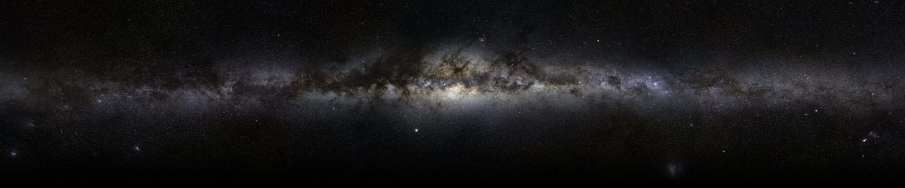

Just nobody from nowhere. I have no name, I have no face. My friends call me GreiP or Banana. Inerested in programming, hacking, netstalking, Japanese culture, graphic things, video games

Who
Am
I
?
Am
I
?
Greip or Saturn LI is a natural satellite of Saturn. Greip is about 6 kilometres in diameter. It is named after Greip, a giantess in Norse mythology. You can see Greip at the background of this site. What a nickname, huh?
What
is
"GreiP"
?
is
"GreiP"
?
